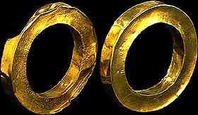

Gold Bracelets

These gold bracelets are probably like the bracelets that are being brought to the pharaoh in the Beit el-Wali cast. They are made of gold which was beaten into a thin sheet, then shaped into a hollow bracelet.
Back...